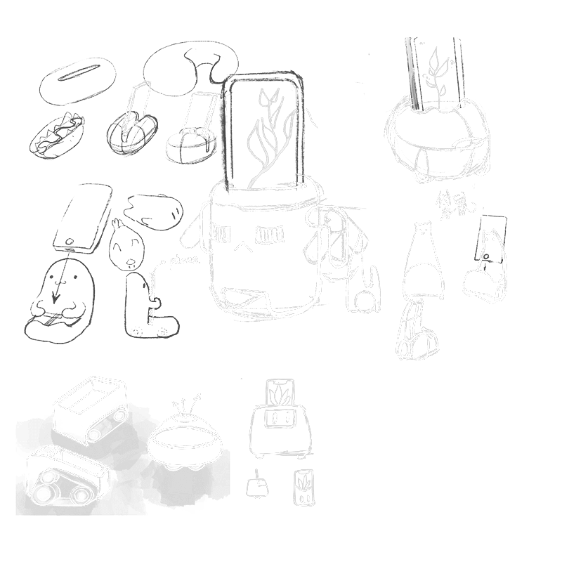

Social background research shows that after entering the Internet era people's average attention span fell from 12 seconds, consecutively, to 8 seconds The study also found that the proportion of web pages browsed by people that lasted less than 4 seconds was 17%, and only 4% lasted more than 10 minutes.
So how can we help people improve their concentration? We explored a design based on open source hardware.
This is an open source hardware topic based on TGAM brainwave sensors, and we have completed prototype building and testing using arduino hardware and the Bafa Cloud IoT platform.
Shiman Zhang
Wenyi Liu
Xinyu Li
Preliminary Research
Scheme Construction
Prototyping
Usability Testing
Hardware Programming
○Single Form
○Tedious and Dull
○Hard to Maintain
After user research and an initial feasibility study, we defined the core functions as three models:
○Working Mode
○Training Mode
○Accompaniment and Growth
We hope that the appearance of the product can be beautiful, convenient and at the same time can interact well with the cell phone, by managing the use of the user's cell phone, a certain degree of isolation of the impact of the cell phone on the ability to concentrate, to this end, we have made a number of attempts:
At first we tried to use a cell phone as a display for the desktop robot, but the interaction with the environment and the real interactivity did not meet our goal of interacting with plants.
Prism's good three-dimensional rendering provides a new direction for us.
Detects work state data and grows by customizing time & concentration level.
Rare plants: randomly dropped, cultivated through mini-game challenges.